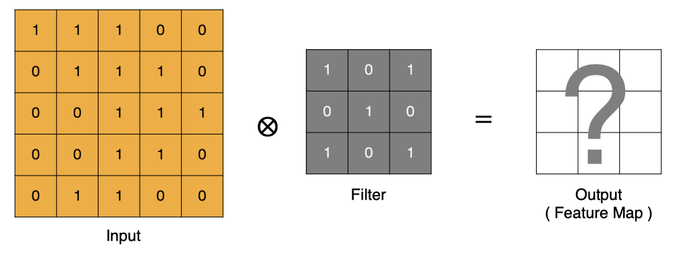
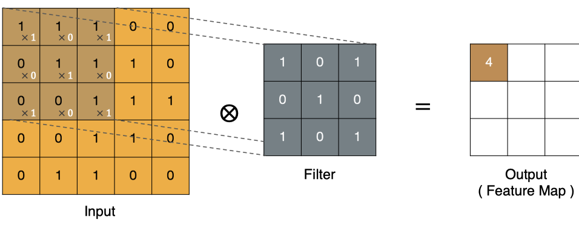
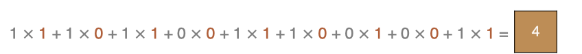
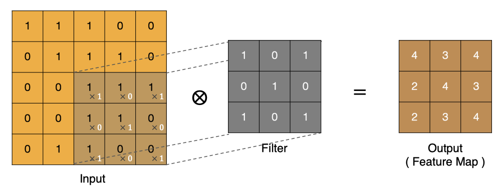
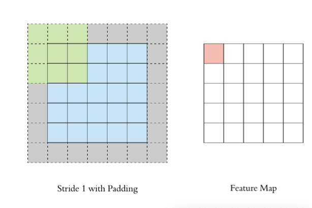
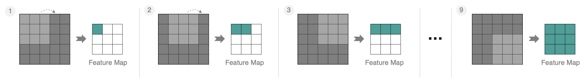
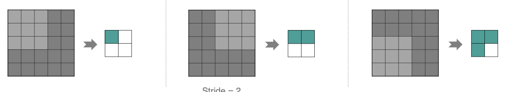
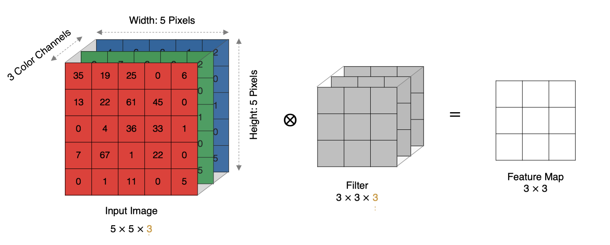
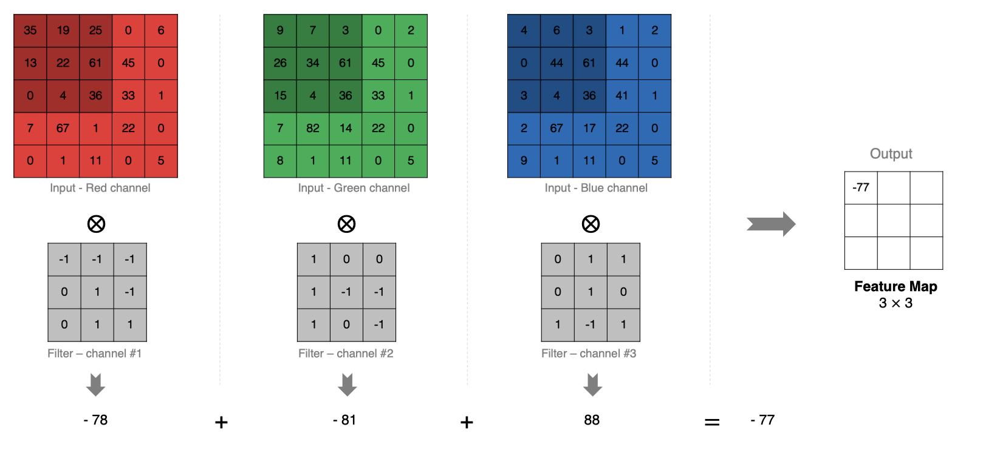
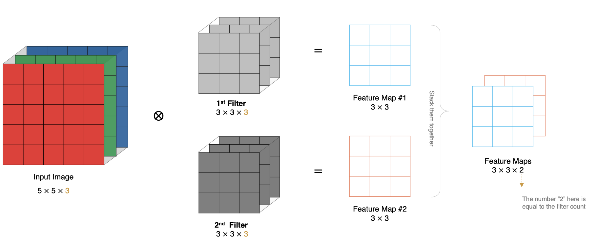

3 卷积层¶
学习目标¶
- 掌握卷积计算过程
- 掌握特征图大小计算方法
- 掌握PyTorch卷积层API
在计算机视觉领域, 往往我们输入的图像都很大，使用全连接网络的话，计算的代价较高. 另外图像也很难保留原有的特征，导致图像处理的准确率不高.
卷积神经网络（Convolutional Neural Network）是含有卷积层的神经网络. 卷积层的作用就是用来自动学习、提取图像的特征.
CNN网络主要有三部分构成：卷积层、池化层和全连接层构成，其中卷积层负责提取图像中的局部特征；池化层用来大幅降低参数量级(降维)；全连接层类似人工神经网络的部分，用来输出想要的结果。
接下来，我们开始学习卷积核的计算过程, 即: 卷积核是如何提取特征的.
1 卷积计算¶

- input 表示输入的图像
- filter 表示卷积核, 也叫做滤波器
- input 经过 filter 的得到输出为最右侧的图像，该图叫做特征图
那么, 它是如何进行计算的呢？卷积运算本质上就是在滤波器和输入数据的局部区域间做点积。

左上角的点计算方法：

按照上面的计算方法可以得到最终的特征图为:

2 Padding¶
通过上面的卷积计算过程，我们发现最终的特征图比原始图像小很多，如果想要保持经过卷积后的图像大小不变, 可以在原图周围添加 padding 来实现.

3 Stride¶
按照步长为1来移动卷积核，计算特征图如下所示：

如果我们把 Stride 增大为2，也是可以提取特征图的，如下图所示：

4 多通道卷积计算¶
实际中的图像都是多个通道组成的，我们怎么计算卷积呢？

计算方法如下： 1. 当输入有多个通道(Channel), 例如 RGB 三个通道, 此时要求卷积核需要拥有相同的通道数数. 2. 每个卷积核通道与对应的输入图像的各个通道进行卷积. 3. 将每个通道的卷积结果按位相加得到最终的特征图.
如下图所示:

5 多卷积核卷积计算¶
上面的例子里我们只使用一个卷积核进行特征提取, 实际对图像进行特征提取时, 我们需要使用多个卷积核进行特征提取. 这个多个卷积核可以理解为从不同到的视角、不同的角度对图像特征进行提取.
那么, 当使用多个卷积核时, 应该怎么进行特征提取呢?

6 特征图大小¶
输出特征图的大小与以下参数息息相关:
- size: 卷积核/过滤器大小，一般会选择为奇数，比如有 1*1, 3*3， 5*5*
- Padding: 零填充的方式
- Stride: 步长
那计算方法如下图所示:
- 输入图像大小: W x W
- 卷积核大小: F x F
- Stride: S
- Padding: P
- 输出图像大小: N x N
以下图为例:
- 图像大小: 5 x 5
- 卷积核大小: 3 x 3
- Stride: 1
- Padding: 1
- (5 - 3 + 2) / 1 + 1 = 5, 即得到的特征图大小为: 5 x 5
7 PyTorch 卷积层 API¶
我们接下来对下面的图片进行特征提取:
test01 函数使用一个多通道卷积核进行特征提取, test02 函数使用 3 个多听到卷积核进行特征提取:
import torch
import torch.nn as nn
import matplotlib.pyplot as plt
# 显示图像
def show(img):
# 输入形状: (Height, Width, Channel)
plt.imshow(img)
plt.axis('off')
plt.show()
# 1. 单个多通道卷积核
def test01():
# 读取图像, 形状: (640, 640, 4)
img = plt.imread('data/彩色图片.png')
show(img)
# 构建卷积层
# 由于 out_channels 为 1, 相当于只有一个4通道卷积核
conv = nn.Conv2d(in_channels=4, out_channels=1, kernel_size=3, stride=1, padding=1)
# 输入形状: (BatchSize, Channel, Height, Width)
# mg形状: torch.Size([4, 640, 640])
img = torch.tensor(img).permute(2, 0, 1)
# img 形状: torch.Size([1, 4, 640, 640])
img = img.unsqueeze(0)
# 输入卷积层, new_img 形状: torch.Size([1, 1, 640, 640])
new_img = conv(img)
# new_img 形状: torch.Size([640, 640, 1])
new_img = new_img.squeeze(0).permute(1, 2, 0)
show(new_img.detach().numpy())
# 2. 多个多通道卷积核
def test02():
# 读取图像, 形状: (640, 640, 4)
img = plt.imread('data/彩色图片.png')
show(img)
# 构建卷积层
# 由于 out_channels 为 3, 相当于只有 3 个4通道卷积核
conv = nn.Conv2d(in_channels=4, out_channels=3, kernel_size=3, stride=1, padding=1)
# 输入形状: (BatchSize, Channel, Height, Width)
# img形状: torch.Size([3, 640, 640])
img = torch.tensor(img).permute(2, 0, 1)
# img 形状: torch.Size([1, 3, 640, 640])
img = img.unsqueeze(0)
# 输入卷积层, new_img 形状: torch.Size([1, 3, 640, 640])
new_img = conv(img)
# new_img 形状: torch.Size([640, 640, 3])
new_img = new_img.squeeze(0).permute(1, 2, 0)
# 打印三个特征图
show(new_img[:, :, 0].unsqueeze(2).detach().numpy())
show(new_img[:, :, 1].unsqueeze(2).detach().numpy())
show(new_img[:, :, 2].unsqueeze(2).detach().numpy())
if __name__ == '__main__':
test01()
test02()
程序输出结果:
8 小结¶
本小节主要学习卷积层相关知识，卷积层主要用于提取图像特征，避免对复杂图像特征的手动提取，经过实践表明，基于卷积核实现的自动特征提取在很多场景下的效果要好于手动特征提取。